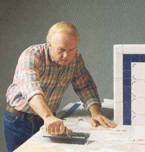
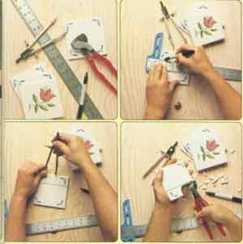
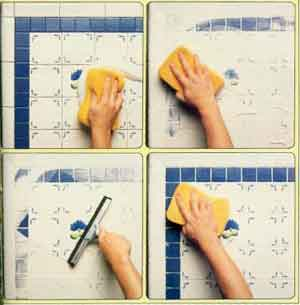
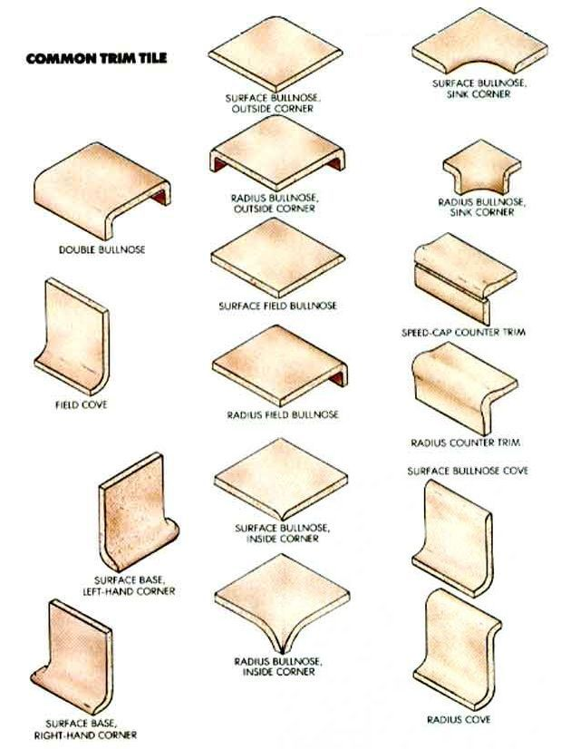
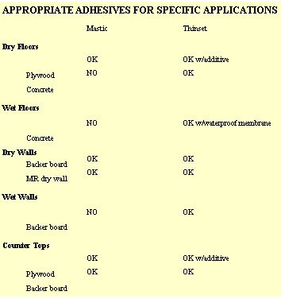

Setting The Ceramic Tile
March/April 1989
Any adventurous amateur can install this beautiful, durable finish material.
Whenever possible, try to do your fudging in dark corners.
IN A METAMORPHOSIS THAT Approaches alchemy, clay heated to between 1,900° and 2,500°F becomes one of the most attractive, enduring building materials known-ceramic tile. Few will deny that a well-done tile installation borders on an, but it has much more than aesthetics to recommend it.
Ceramic tile is practically immune to wear in any but the most abrasive environment, and no common household substance will dissolve it. NASA has faith in tile. At a cost of something over $1,000 each, tiles protect the space shuttles from the heat produced on entering the earth's atmosphere.
Because of its durability, tile is an ideal floor, wall or counter covering for damp areas, such as bathrooms, kitchens and entries. It is also superb for sanitary installations. In fact, when set with special adhesives and grouts, it is tolerated by even the most chemically sensitive people. Tile is also the finish of choice for concrete floors meant for solar storage.
True, quality tile is more expensive than many other finish materials-mass-produced pieces range from a low of about $1 per square foot to well over $5 per square foot-but it compensates by being easy to keep clean and by outlasting all the alternatives. And when it comes time to sell a home, tile's reputation for permanence and easy maintenance pays back its cost many times over.
Selecting and setting ceramic tile is really no more difficult than mastering any other building trade, but the practice does have an aura of mystique-simply because its tools, materials, methods and jargon are unique. Fluency in the language of carpentry, or even that of masonry, will do you little good at the tile store.
Grades
In theory (and according to the American National Standards Institute), there are four grades of tile-nonvitreous, semivitreous, vitreous and impervious-as determined by the amount of water the body (or bisque) will absorb. (This is mainly a function of the temperature and duration of firing.) In actual practice, however, most manufacturers and retailers refer to tile by application, taking into consideration characteristics of both the tile and the glaze that protects it. Tiles are approved for use on walls, floors and, occasionally, counters.
ANSI ratings are important only if you plan to install tile in a wet location, such as a shower, or outdoors in a freezing climate. In either of these situations, at least use vitreous tile, which absorbs no more than 0.3% water. Your dealer should have the ratings information available, probably behind the counter or in some forgotten file cabinet.
Styles
Most of what you see hanging on the walls on palettes when you walk into your local tile store are field tiles -the building blocks of the trade. Among this sometimes dizzying array, you might find mosaics (decorative tiles 2" or smaller), standard wall and floor tiles (usually between 2" and 6" but sometimes up to 12"), pavers (thicker than ½”, usually larger than 6" and usually unglazed) or quarry tiles (large and unglazed in red, black or tan). Similar tiles will be available in a variety of colors, some with decoration.
Always carry a tape measure when you're shopping for tile. There is no standard system for measurement as is the case at the lumberyard. A tile called 4" may measure 3 7 / 8 ” (allowing for a 1 / 8 ” grout line), or it may be a full 4", or it might have been 4" before it was fired and is now something else. (In fact, if you're willing to fudge a bit in setting, you can often get great bargains b y asking for seconds that are off-size.)
As long as the tile grade is suitable to your application, color and configuration are largely matters of taste. As a general guideline, however, big tiles work best in large open areas without complex corners, while small tiles work best in smaller rooms and in areas with complicated corners. Geometric patterns including two or more sizes demand careful layout. You might consider putting off such a complex installation until you've gained a little experience.
Many field tiles 4" and less come in sheets with a web on the front or back that maintains a set grout-line width. These grids can be very helpful for square floor areas. But you may have to remove them to adjust the grout widths to compensate for spaces that aren't ruler perfect.
Another important consideration when choosing a field tile is the availability of trim tiles to handle comers, appliance installations and the like. In general, the more pedestrian the tile design, the wider the selection. Ask your dealer for a chart showing the bullnose, cove, cap and sink corner pieces available with each tile you're considering. Some common styles are shown in the accompanying diagram. You may also need specialty items, such as soap dishes, grab rails or towel racks. If so, be sure they're available in the tile design you choose.
Substrates
It's probably fair to say that most tile installations that fail do so because of what they're stuck to. Tile itself, the grout that surrounds it, and often the adhesive that bonds it to the substrate are very rigid. If the substrate flexes, at best, the grout lines will crack; at worst, the tile will break loose and fall off.
Tile can be mounted successfully almost anywhere on solid concrete or on backer board (fiberglass-reinforced mortar panels that are hung in much the same way as dry wall) and in some locations on exterior plywood or on moisture-resistant dry wall-as long as they're sufficiently thick and well anchored. Let's look at different types of installations to see which substrates are appropriate.
Dry floors: Use a level concrete bed (a slab, or at least 1", wire-reinforced concrete on W-or-more exterior plywood) or a minimum of a 1 / 4 " thickness of wood with the upper layer being no less than W exterior plywood. The plywood should be clean before installation; a roughing with coarse sandpaper is helpful.
Wet floors: Use a concrete bed with W-per-foot slope and appropriate drains. In a shower stall, for example, you can lay a chlorinated polyethylene (CPE) waterproofing membrane (see your tile dealer or plumbing supply) on 1 1 / 4 " of plywood, and cover it with a 1 ½” mortar bed sloping toward a central drain. (Grout, thinset mortar, backer board and concrete are permeable to water, so even impervious tile doesn't form a waterproof covering.)
Dry walls: Use at least a 1" thickness of moisture-resistant dry wall or ½” backer board. Nail or screw these materials every 6", leaving a 1/8” to ¼” gap at the joints. Then tape the joints with fiberglass mesh, and fill and smooth with thinset mortar. Many tile installers claim good results using dry wall as a substrate for this application, while others insist that nothing less than backer board will do. (Some traditional tile setters still trowel mortar to walls as a substrate. This is an excellent method but is probably beyond the amateur.)
Wet walls: Use ½” backer board with the CPE waterproof membrane lapping up the walls behind the backer board to a height of at least 18".
Counter tops: Use at least 1 ¼” of plywood, or ¾” plywood under ½” backer board.
If your tile dealer is conscientious, you will probably be urged to use backer board for all wall installations. Pros often get by with alternatives that are less expensive and easier to install, but a knowledgeable dealer should understand that amateurs are more likely to succeed with backer board.
These panels come in a variety of sizes and thicknesses, but ½" X 3' X 5' is by far the most common simply because it's easier to handle-in both weight and price-than bigger sheets. Even a 3' X 5' piece of backer board weighs almost 50 pounds and costs upward of $15. The dealer probably won't call it backer board, but will use a brand name, such as Wonderboard.
Cutting backer board is no picnic. You can scribe it with a special carbide-tipped tool (see your tile dealer) and then snap it much as you would dry wall. This leaves a pretty rough edge, though. So, many installers prefer to cut it with a masonry blade in a circular saw. Goggles and a dust mask are mandatory when shaping this material. Make holes for faucets and the like with carbide-tipped hole saws or jigsaw blades or both.
Adhesives
Materials for bonding tiles to a substrate-we'll call them adhesives as a catchall-are of two general types: thinsets, which are based on Portland cement, and glues, such as latex mastic. Each type has its advantages and appropriate applications, which are summarized in the accompanying chart.
Most professional tile setters prefer thin-sets, not only because they're somewhat more economical than mastics but also because they're so much more versatile. You'll notice on the chart that mastic is limited to a few specific applications, while thinset can be used almost anywhere. If you're going to concentrate on one adhesive, thinset is certainly the one to choose.
That said, it's worth mentioning that many pros augment their thinsets with additives to improve their strength, flexibility and water resistance and to extend their setting time. Most use a latex or acrylic liquid to replace all or pan of the water in the thinset. Ask your tile dealer what is recommended. Some pros also use epoxy thinsets-which come with their own cement-sand mixture-for counter tops, but epoxy is more expensive than thinset and less forgiving during application.
Shopping
The prelude to success in setting ceramic tiles is careful planning. Prepare a drawing of the installation so you can make an exact count of both field and trim tiles. Then translate the count in field tiles to square footage, the unit by which you order them. As long as your dealer is cooperative about returns (most are), go ahead and order an extra 10% of the field tiles and one extra of each of the trim tiles. These will cover breakage and the occasional defect.
The dealer will be able to estimate the amount of adhesive and grout you'll need from the square footage of tile you order. Thinset comes in bags, like bagged concrete but in 10-, 25- and 50-pound weights. You may have some left over at the end, but it can be stored for about six months as long as it's kept dry. Mastics commonly come in five- and 25-pound buckets. Once opened, shelf life is six months to a year.
While you're buying tile, pick up a few basic tools. You'll need a notched trowel to apply adhesive in ridges that can be squished by the tile. The correct groove depth and configuration depends on the type of adhesive, the tile and the substrate. Ask your dealer which one's right for the job. You'll also need a grout float (or sponge trowel) to force grout between the tiles. There are two types, both of which are roughly 4" X 10" rectangular trowels with rubber faces. The type with sponge rubber is easier on tile glaze and should be used with unglazed or soft-glazed tile; the type with a smooth rubber face works better on glazed tiles. Tile dealers also sell special sponges for cleaning up grout. Their rounded shape works much better than the standard brick-shaped grocery store sponge. Get two.
To cut tiles, you'll need nibblers and a snap cutter. Nibblers, which are used to take small bites of tile when shaping curves around faucets and the like, should run around $10, so you might as well buy a pair. A snap cutter allows you to make straight cuts by scribing a line across the glaze with a carbide roller (like the one on a glass cutter) and then pushing simultaneously on each side of the scribed line. They cost more than $50 new but can be rented for $5 to $8 per day. Many tile dealers will loan a snap cutter as a courtesy to a customer who makes a substantial tile purchase.
Layout
On your first tile job, lay out the entire floor section before you even open the adhesive. Grab a fistful of tiles, and set them out across the narrow dimension of the floor in a single line, establishing an even grout line as you go. (If your tiles are on sheet grids, leave them on for the moment.) Chances are, you'll find that you end up with a partial tile at the far side. This is no cause for panic; it's what tile cutters are made for. Cut tiles can look quite acceptable. Besides, if you have baseboards or a cabinet with a toe overhang, just plan to put the cut edges of partial tiles underneath, where they won't show.
Next, try the same operation at the other end of the room, maintaining the same grout lines. Often as not, you'll find that the room width isn't exactly the same at both ends, which will require that you learn how to fudge creatively.
There are two cardinal rules to successful fudging: 1) If at all possible, don't compensate for an out-of-square room by cutting the tiles at the wall to varying widths; this makes the condition glaringly apparent, despite even grout lines. Try to compensate by varying the grout-line widths slightly. 2) When you vary grout-line widths, pay attention to common lines of sight. Maintain grout lines that are straight and parallel to walls or cabinets in the prevalent viewing direction. Usually, this means being consistent on the long dimension of the room, but there are exceptions. For instance, perhaps the most important view is the first one you get on entering the room. Stand in the doorway and imagine what you'll see. Do your serious fudging in dark corners; say, behind the commode.
The amount you can vary grout lines to compensate for out-of-square depends on the size, shape and color of the tile and the color of the grout (dark grouts against light tiles accent errors). Nonetheless, as a guideline for planning, figure about an inch increase or decrease for every 4' of run. (If you'll have to fudge beyond that, it's best to fur out the walls to correct the out-of-square condition.) And whatever amount you do add or subtract, bear in mind that the increase or decrease must be progressive and consistent from the narrowest point to the widest point or the tiles will appear to stairstep-a dead giveaway that something's amiss.
Cutting Tile
If you're lucky or creative enough to have a job that requires no tile cutting, congratulations. Skip to the next section. For the majority of jobs, though, you'll have to prepare at least a few customized tiles.
Tiles that have to be cut to other than a straight line must be nibbled. In addition, to prepare some trim tiles for installation in corners (cove bases, for example), you'll have to do your own mitering by hand. Nibblers resemble wire cutters with carbide jaws, but they're much more difficult to use. Rare is the tile setter who can cut a presentable line with nibblers. Fortunately, nibbled tile edges are usually hidden.
Expertise in nibbling comes only with practice, so select a few sacrificial tiles, and try some patterns before you start the job. A few tips: Wear safety glasses and gloves; chips fly with surprising velocity when nibbling. Take only small bites; large ones tend to run out beyond the desired line. Keep the handles parallel to the plane of the tile so the nibblers don't over- or undercut. Even if you're experienced, try some practice cuts when working with tile you haven't used before. Some types of tile are more brittle than others and may have inherent limitations or preferred breaking patterns.
By comparison, using a snap cutter is simple, and the results are much more pleasing. Just set the tile against the base (closest to you), and draw the handle toward you, pulling the scoring wheel across the face of the tile. There should be no need to bear down very hard. Only the surface of the glaze needs to be cut, and a sharp cutter should accomplish that with light pressure. If you have trouble, suspect a dull cutter. It's difficult to tell how sharp one is by looking or feeling; the best test is whether it's working.
Don't run the cutter across twice for good measure. It's very hard to get back in the same groove for a second try, so you'll probably get two scores, which will produce a ragged break.
Once you've scored the face of the tile, use the wings on the handle to put pressure on the tile on each side of the score. A pop with the butt of your hand should snap it cleanly. If the wings' tips mar the face of the tile, wrap a little duct tape around them.
Depending on the tile used, snap cutters can cut down to around a ½” width. To break a piece this narrow, though, you'll have to set scraps on the tile on each side of the score so the arms can reach. Occasionally, there will be a small imperfection in the cut that you can correct with nibblers. If your layout dictates a cut smaller than ½”, plan to cut the end tiles on both sides of the room, so the cut pieces will be of reasonable size.
You can't plan a wall's layout to the degree that you can a floor's, but you can measure carefully to anticipate problems. The same general rules of fudging floor grout lines for out-of-square apply to walls. Unfortunately, you won't often be able to hide irregularly sized cut tiles at corners, so try very hard to keep the grout lines running parallel to the walls. Fortunately, wall tile doesn't usually run full height, so problems won't have such a large space to grow.
To cut around faucets, you can use a carbide hole saw if you're very persistent. Most tile setters aren't, and choose to split the tile on a line where the center of the hole will be (with the snap cutter) and then nibble out both pieces for the faucet stem. A trim ring will cover most of the dirty work.
Finally, prepare your substrate by snapping chalk lines at intervals equal to a number of tiles that works out to something close to 3'. For 3 7 / 8 ” tiles with 1 / 8 ” grout lines, for example, snap lines every nine tiles. These lines aren't so much to align tiles as they are to establish areas over which to spread adhesive.
Setting
Once you have all the tiles laid out and the cuts made, setting is really pretty easy. If you're using mastic as an adhesive, there's essentially no prep work.
Thinset, however, needs to be mixed, left to stand for 10 to 15 minutes and then remixed before use. Clean, plastic five-gallon buckets, like the ones used for dry-wall mud or commercial pickles, work well for mixing thinset. Don't mix much thinset in any one batch. It has a working time of only one-half to one hour, depending on the temperature, relative humidity and additives used. Start by placing about one-half gallon (the contents of a two-pound coffee can) of dry mix into the bucket. Then begin to add water, stirring constantly. Be sparing with the water, the mix will go quickly from too dry to too wet. Try for the consistency of thick hot cereal.
You can mix thinset in these quantities by hand with a trowel, but you'll have more strength left for tile setting if you use a mixing wand on a ½” electric drill (observe safety precautions for power tools in a wet environment). Whichever method you choose, restir the thinset after it's stood for 15 minutes. Then tote it inside.
Start laying tile in the least-visible corner, so you'll make your beginner's mistakes in an unobtrusive spot. Scoop thinset or mastic out of the bucket with the trowel, and spread it in a layer about ¼” thick in a 3' square. Apply adhesive a couple of inches beyond the chalk lines.
Next, use the notched side of the trowel, holding it so it's angled at about 30° from vertical, to rake the adhesive into ripples. Test the thickness of the adhesive bed by pressing a tile into the adhesive with a twisting motion. There shouldn't be an excessive amount of adhesive squeezing out from underneath, but the entire underside should be coated when you lift it. If there's too much adhesive, increase the angle of the trowel from vertical, or retreat and get a trowel with smaller notches. The opposite problem requires opposite solutions.
Start at the corner, and work outward along both walls. Press the tiles into the adhesive with a little twisting motion. If adhesive oozes up between the tiles into the grout line, you're putting down too much adhesive. Be sure to remove the adhesive from the grout lines so the grout will have somewhere to go. (Bamboo shish kebab skewers are particularly effective for cleaning out narrow grout lines.) If any adhesive gets on the face of a tile, remove it immediately.
Once you've defined two sides of the 3' -square area, fill the rest in with field tiles. You can use a straightedge to guide you to straight grout lines, but squinting with one eye closed is often effective.
With either thinset or mastic, you'll be able to nudge the tiles around for as long as two hours, so further adjustments are possible later. In fact, it's a good idea to return to each completed section after about an hour and rock each tile a little to see if it's well set. Occasionally a pebble or wood chip will get underneath a tile and prevent it from seating properly. At this stage, such a problem is still pretty easy to correct. Just remove the tile, clean its back and the substrate, butter the back of the tile with adhesive, and push it back into place.
If you're feeling confident after the first section, you can move right on to the next one as long as your thinset isn't getting too dry. Mix new thinset if the old is beginning to break into clumps when you try to spread it. (Never add water to "renew" thinset.)
Grouting
Thinset or mastic on walls should be allowed to dry at least overnight before you apply grout. Let mastic on plywood floors sit for two days before you put weight on it.
Mix grout as you would thinset-with the electric drill and stirring rod-but to a slightly wetter consistency. It's difficult to face the prospect of tossing a blob of cement onto your pretty new tile, but that's how you start. Scoop a glob about the size of a snowball onto the grout float, and plop it down near your hidden corner. Then use the rubber-faced float to spread the grout and force it into the grout lines. Don't hesitate to apply some pressure to remove air bubbles.
Though it won't hurt to apply grout at wall corners and at joints between floors and walls, don't be surprised if some cracks appear later. Most house frames are built from wood, which expands and contracts with the seasons, so you can expect distinct wall and floor elements to move relative to each other. You could devise expansion joints for such locations-as would any professional who wouldn't want to get a callback-or you could just wait and caulk the ones that crack.
Once the grout lines are full, scrape away the excess with the long side of the float. Angle it at least 45° from vertical so it won't be prone to gouge out the grout lines, and be sure to apply light, even pressure. The grout lines should be flat or slightly concave and just below the surface of the tiles.
When you've removed all you can with the float, switch to the sponges. Wring as much water as you can from them before wiping the tile faces, and clean them frequently, replacing the water in the bucket as soon as it starts to get a sudsy foam on top.
Get as much of the grout as possible off the faces of the tiles before it dries. This means repeated sponging followed by sponge cleaning. Use a very light touch, though, so you don't disturb the grout lines. And keep the sponges wrung out so you don't wet the grout any more than necessary. If you're properly fastidious, there should be nothing more than a film left, which can easily be wiped off with a soft rag the next day. Should you leave a little too much on, though, a little vinegar helps dissolve dried grout from the face of a tile.
Grout needs to be left undisturbed overnight before receiving traffic. Before you put the area to use, you might want to consider applying a sealer to the grout. Your tile dealer should have a spray-on product that is advertised to keep grout clean and mildew-free.
Once the fear wears off, you'll probably find that tile setting is fun and very satisfying. It mixes the skills of the carpenter and the mason, with a liberal dose of graphic design. And there's just a hint of achieving relative immortality in knowing that you've built something that will outlast you.
|
 © AL CLAYTON NIBBLERS Tools used for making curved or angular cuts in tile. Make a line for the proposed cut with an erasable pen or pencil. Smooth ares can be marked with a compass or an appropriate template. Holding the tool square, nibble away small bites until you reach the line. |
 © AL CLAYTON SNAP CUTTER Set the tile against the ruled base, and hold it firmly. Pull the cutter across the tile, pressing down lightly to score the glaze. Pivot the handle to lower the wings onto the tile on each side of the line. Press sharply on the handle tile along scribed line. |
 © AL CLAYTON GROUTING ALTERNATIVE Apply with a sponge instead of a grout float. Press the grout firmly into the grout lines to remove all air bubbles. Clear the excess grout from the faces of the tiles with a grout float. Clean tiles with a damp sponge, rinsing to remove all grout. |
|
 © AL CLAYTON |
 BY CAROL PULITZER |
 |